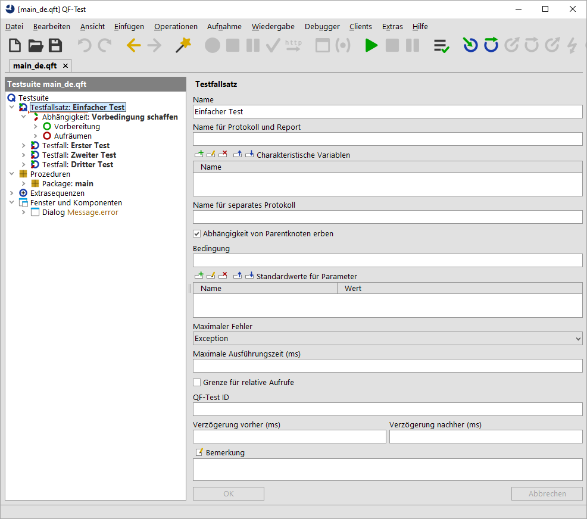

| Version 6.0.3 |
Die grafische Oberfläche (Graphical User Interface, kurz GUI) einer Applikation besteht aus einem oder mehreren Fenstern, die verschiedene Komponenten beinhalten. Diese Komponenten sind ineinander verschachtelt und bilden eine hierarchische Struktur. Komponenten, die andere Komponenten enthalten, heißen Container. Da QF-Test selbst eine komplexe Applikation mit grafischer Oberfläche ist, kann das Hauptfenster gut als Beispiel dienen:
|
|  | ||
|
| Abbildung 5.1: Komponenten eines GUI | ||
Das Fenster (window) enthält eine Menüleiste (menu bar), welche wiederum die Menüs (menu) für QF-Test enthält. Darunter befindet sich die Werkzeugleiste (toolbar) mit den Knöpfen (toolbar buttons). Der Hauptteil bedient sich einer split pane um die Baumansicht und die Detailansicht zu trennen. Die Baumansicht besteht aus einer Beschriftung (label) "Testsuite" und dem Baum (tree). Die Detailansicht enthält selbst wieder eine komplexe Hierarchie von verschiedenen Komponenten wie Textfeldern (text field), Knöpfen (button), einer Tabelle (table), etc. Dabei gibt es noch eine ganze Reihe von Komponenten, welche man nicht auf den ersten Blick erkennt. So steckt der Baum z.B. in einer scroll pane, die scroll bars anzeigt, wenn der Baum zu groß für seinen Bereich wird. Verschiedene panes dienen lediglich als Container und Hintergrund für andere Komponenten, z.B. der Bereich, der die "OK" und "Abbrechen" Knöpfe enthält.
Sofern nicht explizit anders angegeben bezieht sich der Begriff "Komponente" in diesem Handbuch auf die Elemente eines GUI, egal, wie die einzelnen Komponenten in der jeweiligen GUI Technologie genannt werden.
| Letzte Änderung: 6.9.2022 Copyright © 1999-2022 Quality First Software GmbH |